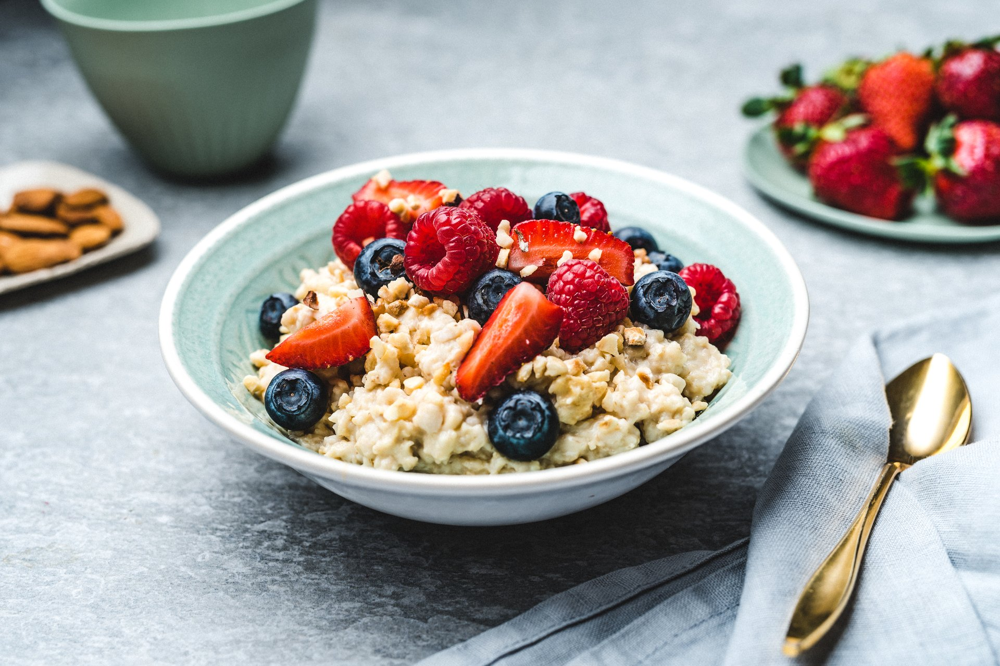

Hommikune kaerahelbepuder

| Koostisosad |
Kogus |
| Kaerahelbed |
2 dl |
| Vett või piima |
0,5 l |
| Näputäis soola |
| Meelepäraselt suhkrut |
- Kuumuta paksupõhjalises potis vesi või piim (või vee-piima segu) keemiseni.
- Lisa pudruhelbed, sega ja lase tasasel tulel 7-8 minutit podiseda, kuni helbed on pehmed.
- Maitsesta soolaga, soovi korral võid lisada ka suhkrut.
Veel huvitavaid retsepte